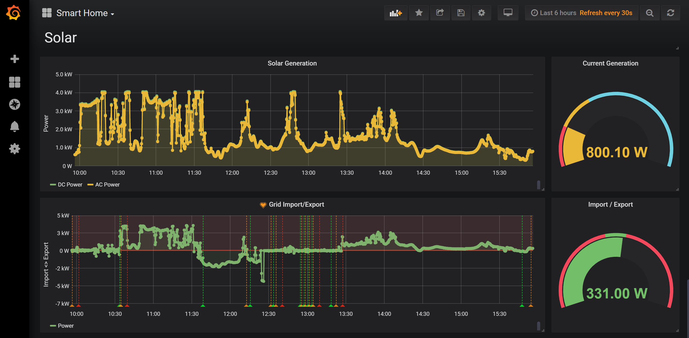
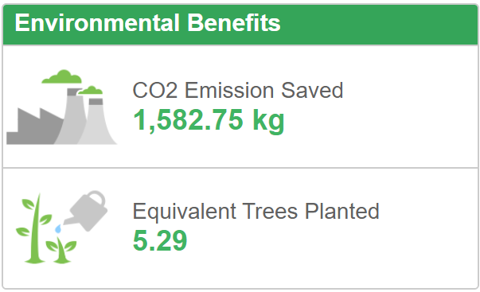

TL;DR
Installing solar panels and monitoring solar production not only provides immediate benefits in sustainable living but also highlights new, simple ways to change your lifestyle to further save money and energy. Here's how we do it.
Background
As with most people nowadays, the environment and climate change is weighing heavily on my thoughts. As such, my partner and I have been looking into ways we can make our lifestyle more sustainable. Being in tech, I have chosen to "use what I know" to enable or facilitate changes to our lifestyle that promote sustainability without compromising on quality of living or requiring unnecessarily onerous daily chores.
In this series of blog posts, I will be describing the decisions, approaches, tools and devices we've employed since starting down this road. Where possible, I will share as much of the tech as possible so others can adopt or adapt similar practises and, hopefully, enhance the sustainability of their lifestyle too.
Solar Power
Our first - and possibly most significant - step towards a more sustainable lifestyle has been to install solar panels. Until recently, installing solar panels on a domestic property in the UK has been a questionable value proposition due to the return on investment sometimes being longer than the lifetime of the panels/inverter. The UK government went someway to alleviating this issue with Feed-in Tarrifs (FiT) but still repayment times tended to be longer than the warranty period of many of the components in the installation.
Nowadays, the drop in costs and improved efficiency of solar panels coupled with improved and more robust technology in other components (particularly the inverter) mean that, despite the UK government ending the FIT program, a solar installation can easily provide a return on investment within the warrantied lifetime it's components.
And so it was that, when we moved into our new house, we set aside money to install solar panels. After a lot of research into the underlying technologies, comparing features provided by various manufactures and talking to a number of solar installation specialists, we chose a local company to install a 6.18kWp system comprising of JA Solar panels and a SolarEdge inverter.
Monitoring Solar Production
While JA Solar was chosen simply due to it's price/performance ratio, we were especially keen to install a SolarEdge system due to it's ability to be monitored in multiple ways.
First up, SolarEdge provides an excellent cloud-based monitoring platform with both web and native apps compatible with major platforms. Furthermore SolarEdge provide a RESTful API facilitating automated data collection and monitoring. Unfortunately the cloud-based apps/API require that all data collection (and a significant amount of inverter control) is delegated to SolarEdge servers (with all the privacy and security considerations that implies) and are then subject to usage-restrictions, request limits and significant latency.
Fortunately, the SolarEdge inverter also provides numerous means of local data collection and control. The most powerful of these means is the onboard RS-485 connector which allows full control over the inverter and the ability to collect virtually all data generated by the unit. The github user 'jbuehl' has by-far the most accomplished open-source code available for interacting with this interface in his 'solaredge' repository. Unfortunately, while it is the most powerful, it is also the most difficult means of recording data from the inverter, requiring the user to open the inverter and wire up to the RS-485 connector directly.
However, if you don't require control over the inverter and merely want to record the data being generated, there is a much easier means: ModBus over TCP. While this does require a setting to be enabled on the inverter (a completely trivial series of button presses), connection is made via standard TCP/IP on port 502.
SolarEdge.Monitor
While there were numerous repositories on Github for interacting with SolarEdge inverters, there didn't seem to be any that met all my requirements. Specifically, I wanted a solution that could be easily deployed to a variety of target platforms, which could read all available inverter parameters and publish these parameters to an MQTT broker (for consumption by other services) at a configurable interval.
I therefore wrote SolarEdge.Monitor.
This project was a lot of fun and utilised the following technologies and techniques:
- .NET Core 2.2
- Docker (and Docker Hub)
- MQTT
- ModBus over TCP
- Background tasks with hosted services in ASP.NET Core
- The .NET Core Options pattern for configuration
- Fluent Namespacing
- Reactive State Machines
While it can be cloned and run locally, it's real value comes when used as a containerized application as part of a composed solution.
Docker & Docker Compose
SolarEdge.Monitor is available as a Linux container image from Docker Hub. It can therefore be run from any docker host (anything from a RaspberryPi to Windows Server) by simply issuing the following commands:
docker pull ibebbs/solaredge.monitor
docker run [environment variables] ibebbs/solaredge.monitor
The various environment variables are (or will be shortly) fully documented on Docker Hub but here are a simple set that will get the service running:
Solaredge:Monitor:Inverter:Address=[IP Address of the Inverter]
Solaredge:Monitor:MQTT:Address=[IP Address of the MQTT broker]
Solaredge:Monitor:Service:ModelsToRead=inverter
Running with these settings will poll the inverter every 10 seconds and publish a JSON serialized message containing data read from the inverter to the MQTT broker on a topic named home/solar/inverter. This can be consumed by any MQTT client for further processing.
To provide data persistence, aggregation and visualization, I use docker-compose to supplement SolarEdge.Monitor with other services such as:
- Node-Red - for receiving MQTT messages and reshaping them into metrics for submission to...
- InfluxDB - for persisting the metrics and providing a querying back-end to...
- Grafana - for visualizing persisted data and extracting insights
Here's an example docker-compose.yml that, while requiring some substitution of environment variables, provides most of the ground work for getting these services running together (I'm afraid I don't yet have the customised Node-Red image or flows hosted in a public repository, but I hope to have this available soon):
version: "3.2"
services:
# https://hub.docker.com/_/eclipse-mosquitto
mqtt:
image: eclipse-mosquitto
ports:
- "1883:1883"
- "9001:9001"
# https://hub.docker.com/r/nodered/node-red-docker/
nodered:
build: ./nodered
ports:
- "1880:1880"
volumes:
- type: volume
source: nodered
target: /data
volume:
nocopy: true
depends_on:
- "mqtt"
# https://hub.docker.com/_/influxdb
influxdb:
image: influxdb
ports:
- "8086:8086"
environment:
- INFLUXDB_DB=SmartHome
- INFLUXDB_HTTP_AUTH_ENABLED
- INFLUXDB_ADMIN_USER=InfluxAdmin
- INFLUXDB_ADMIN_PASSWORD=[Admin password]
- INFLUXDB_USER=InfluxUser
- INFLUXDB_USER_PASSWORD=[User password]
volumes:
- type: volume
source: influxdb
target: /var/lib/influxdb
volume:
nocopy: true
# https://hub.docker.com/r/grafana/grafana
grafana:
image: grafana/grafana
ports:
- "3000:3000"
environment:
- GF_SECURITY_ADMIN_PASSWORD=[Admin password to set for Grafana]
- GF_PANELS_DISABLE_SANITIZE_HTML=true
depends_on:
- influxdb
volumes:
- type: volume
source: grafana
target: /var/lib/grafana
volume:
nocopy: true
# https://hub.docker.com/r/ibebbs/solaredge.monitor
solaredgemonitor:
image: ibebbs/solaredge.monitor
environment:
- Solaredge:Monitor:Inverter:Address=[Address of SolarEdge Inverter]
- Solaredge:Monitor:MQTT:Address=mqtt
- Solaredge:Monitor:MQTT:ClientId=InverterMonitor
- Solaredge:Monitor:Service:ModelsToRead=inverter
depends_on:
- mqtt
volumes:
nodered:
driver_opts:
type: nfs
o: "addr=192.168.1.11,nolock,soft,rw"
device: ":/smartHome/nodered"
influxdb:
driver_opts:
type: nfs
o: "addr=192.168.1.11,nolock,soft,rw"
device: ":/smartHome/influxdb"
grafana:
driver_opts:
type: nfs
o: "addr=192.168.1.11,nolock,soft,rw"
device: ":/smartHome/grafana"
Note that I use IP-Address protected NFS volume shares for persisting data to a Windows Server. These can be quite tricky to set up but it's the most reliable means I've found of persisting docker volumes with stock docker-compose (i.e. without additional plugins).
With this file in hand (or, more to the point, on disk), all the services can be started together by simply navigating to the file's location and issuing the following command:
docker-compose up
Here's a screen capture of my current Grafana dashboard (today hasn't been a great day for solar):
Conclusion
Being able to quickly and reliably monitor our solar production has drastically changed how we use electricity in the house. For example, the washing machine and (shock, horror!) tumble dryer (sorry, we have kids and therefore too much washing to hang everything out) now get put on only when we have surplus electricity. We've also become super conscious of the multitude of energy zapping devices we have plugged in all over the house which we now endeavour to turn off as often as possible.
Furthermore, being able to aggregate and analyse this data retrospectively has allowed us to make informed decisions on future sustainability choices like whether to get an electric car or solar battery. Unfortunately neither of these options have yet made the cut, mostly due to RoI considerations.
In future posts, I'll show some of the ways in which I've used this data and other forms of technology to further promote sustainable living. For now though I would like to conclude by saying that having solar panels installed and being able to see the impact they're having has had a profound effect on our electricity usage and our views on sustainability in general. We feel very good about having made this important step to reducing our carbon foot-print and that, in itself, has provided the motivation to explore more ways to live more sustainably.
